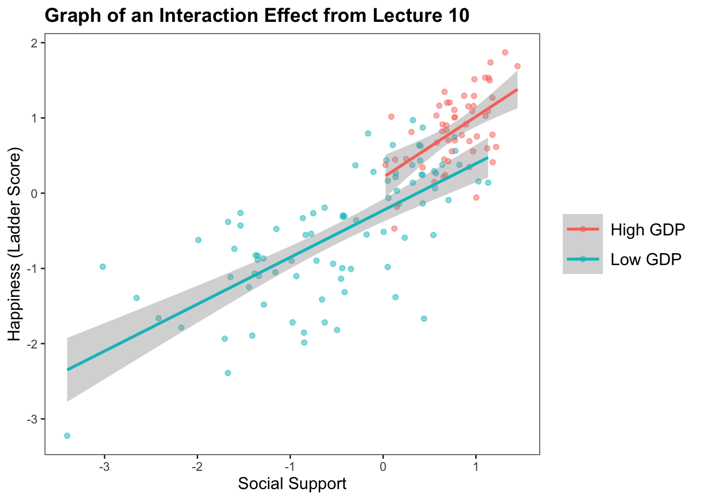

ICE BREAKER : what’s your favorite place in the bay area to see nature?
THE STUDY : participants were shocked while looking at images (virtual nature, urban, or indoor) while getting their brains scanned. participants rated the subjective unpleasantness of each trial.
Some volunteers to share with the class? Low-stakes practice for more stressful situations where you will be more prepared :)
Would You Like to Learn More?
Watch Out for Overfitting in Your Models
When your model is too complex, each variable in the model (parameter) increases the model complexity.
ACTIVITY : Where would you draw the line of best fit here?
library(ggplot2)# Fakin' some data.set.seed(42)n <-100x <-seq(-5, 5, length.out = n)y <-sin(x) +rnorm(n, sd =2)d <-data.frame(x, y)# Graphin the fake data.ggplot(d, aes(x, y)) +geom_point(size =2) +# stat_smooth(method = "lm", formula = y ~ poly(x, 25), se = FALSE, color = "red", size = 2) +# labs(title = "Overfit Model (25-Degree Polynomial IV") +theme_minimal()
KEY IDEA :complex models that perfectly fit the data are problematic
You essentially describing your sample, and not the underlying population (which is usually the goal of multiple regression.)
We don’t expect over-fit models to generalize to other samples. [Image source]
Cross Validation : Conceptual Understanding
Cross Validation. To ensure your model generalizes to other samples, you can a) replicate, or b) cross-validate your data. Cross validation involves dividing your sample into sub-samples; define a model on one sample, then test the model in the other(s).
Example : Cross-Validating an Interaction Effect
The Graph : The Relationship Between Social Support and Happiness Depends on GDP
h <-read.csv("~/Dropbox/!GRADSTATS/Datasets/World Happiness Report - 2024/World-happiness-report-2024.csv", stringsAsFactors = T)library(ggplot2)library(jtools)## Some data cleaning.h$GDPcat <-ifelse(scale(h$Log.GDP.per.capita) >sd(h$Log.GDP.per.capita, na.rm = T), "High GDP", "Low GDP")h$GDPcat <-as.factor(h$GDPcat)# plot(h$GDPcat) # making sure this re-leveling worked.ggplot(data =subset(h, !is.na(h$GDPcat)), aes(y =scale(Ladder.score), x =scale(Social.support), color = GDPcat)) +geom_point(alpha = .5, position ="jitter") +geom_smooth(method ="lm") +labs(title ="Graph of an Interaction Effect from Lecture 10") +xlab("Social Support") +ylab("Happiness (Ladder Score)") +theme_apa()
`geom_smooth()` using formula = 'y ~ x'

Table : Linear Models for the Interaction Effect from Lecture 10
mod1 <-lm(scale(Ladder.score) ~scale(Log.GDP.per.capita), data = h)mod2 <-lm(scale(Ladder.score) ~scale(Social.support), data = h)mod3 <-lm(scale(Ladder.score) ~scale(Log.GDP.per.capita) +scale(Social.support), data = h)mod4 <-lm(scale(Ladder.score) ~scale(Social.support) *scale(Log.GDP.per.capita), data = h)export_summs(mod1, mod2, mod3, mod4)
Model 1
Model 2
Model 3
Model 4
(Intercept)
0.00
0.00
0.00
-0.09
(0.05)
(0.05)
(0.04)
(0.06)
scale(Log.GDP.per.capita)
0.78 ***
0.38 ***
0.34 ***
(0.05)
(0.07)
(0.07)
scale(Social.support)
0.82 ***
0.55 ***
0.64 ***
(0.05)
(0.07)
(0.07)
scale(Social.support):scale(Log.GDP.per.capita)
0.13 *
(0.06)
N
140
140
140
140
R2
0.59
0.66
0.73
0.74
*** p < 0.001; ** p < 0.01; * p < 0.05.
Here’s the most simple example of cross-validation (“train-test split”; “holdout cross validation”)
sample(0:1, nrow(h), replace = T, prob =c(.7, .3)) # using the sample function
## Applying the model to our testing dataset.predict(train.mod, newdata = htest) # produces predicted values from our training model, using the testing data.
Linear Regression
143 samples
2 predictor
No pre-processing
Resampling: Leave-One-Out Cross-Validation
Summary of sample sizes: 139, 139, 139, 139, 139, 139, ...
Resampling results:
RMSE Rsquared MAE
0.6342914 0.7098648 0.4796968
Tuning parameter 'intercept' was held constant at a value of TRUE
Watch Out for Multicollinearity.
If your independent variables are highly related, then your multivariate regression slope estimates are not uniquely determined. weird things happen to your coefficients, and this makes it hard to interpret your effects.
IN R : check the “variance inflation factor” (VIF); a measure of how much one IV is related to all the other IVs in the model. “Tradition” is that if VIF is > 5 (or I’ve also seen VIF > 10) there’s a problem in the regression.
\(\huge VIF_j=\frac{1}{1-R_{j}^{2}}\)
library(car)
Loading required package: carData
vif(mod4) # doesn't seem like multicollinearity is a problem.
there are higher-order terms (interactions) in this model
consider setting type = 'predictor'; see ?vif
A Discussion on Effect Size and the Course and Psychology
There’s a LOT of Error in Our Predictions of People.
Richard, F. D., Bond Jr, C. F., & Stokes-Zoota, J. J. (2003). One hundred years of social psychology quantitatively described. Review of general psychology, 7(4), 331-363.
Find a “Hard Science” effect from Table 1. Does the size of this correlation surprise you? Why / why not?
Find a “Psych Science” effect from Table 2. Does the size of this correlation surprise you? Why / why not?
Small Effects Matter
Funder DC, Ozer DJ. Evaluating Effect Size in Psychological Research: Sense and Nonsense. Advances in Methods and Practices in Psychological Science. 2019;2(2):156-168. doi:10.1177/2515245919847202
Doing Good Science is Hard But Important to Be “Valid”
Allen C, Mehler DMA (2019) Correction: Open science challenges, benefits and tips in early career and beyond. PLOS Biology 17(12): e3000587. https://doi.org/10.1371/journal.pbio.3000587
Percentages of null findings among RRs and traditional (non-RR) literature [46,47], with their respective 95% confidence intervals.
Other Methods Exist for Describing the World
Qualitative studies.
Philosophy.
Critical Theory.
History.
Art.
Religion / faith.
What are the Benefits of Using the Scientific Approach? What are the Limitations (or Dangers)?
Is a “Valid” Psychological Science Possible?
Farewell! Feel free to stay in touch :) it has been a pleasure and privilege to work with y’all this semester <3